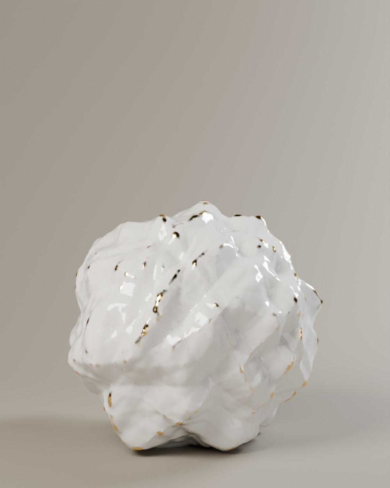
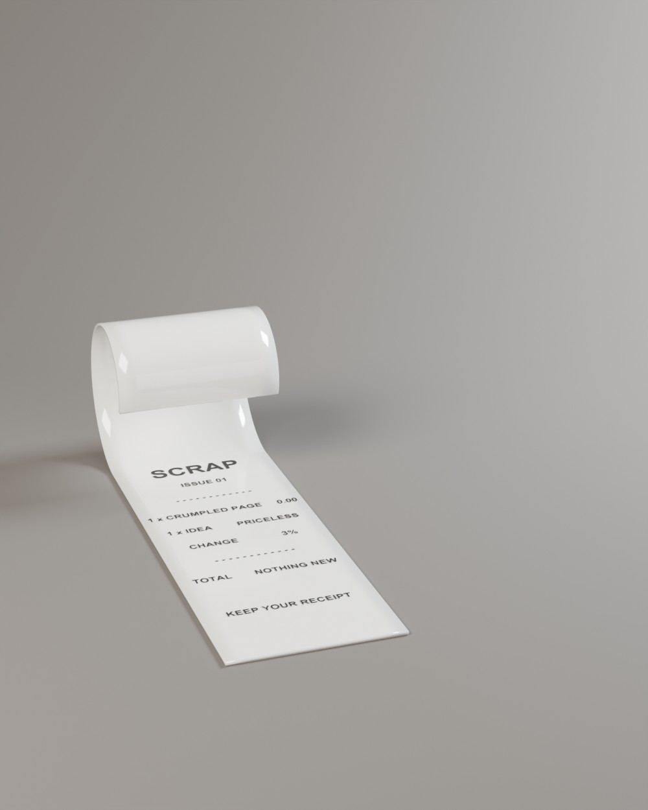

SCRAP 01 · The readymade · p.14
The most worthless thing in the studio
Every design begins with pages that don’t survive. They are balled up, thrown at the bin and missed. Abloh’s first move was always to take the thing nobody valued and look at it again. Here the draft is cast in porcelain and fired twice; the second firing lays gold along every crease, so the object records exactly how it was thrown away.
Start with what exists. Change it by three per cent.
